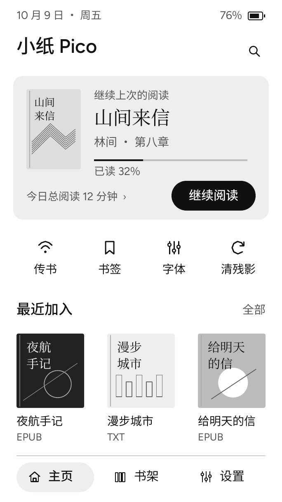
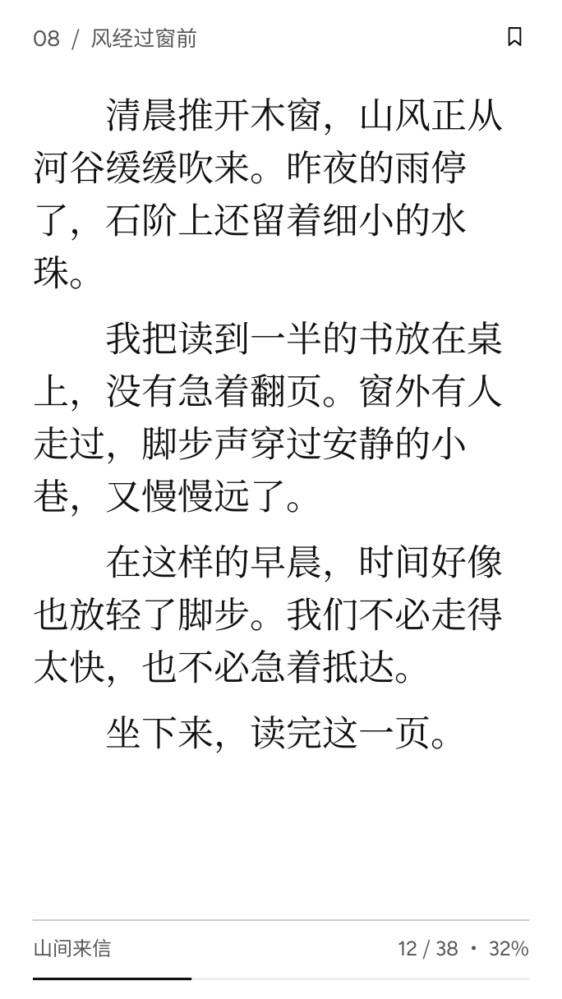
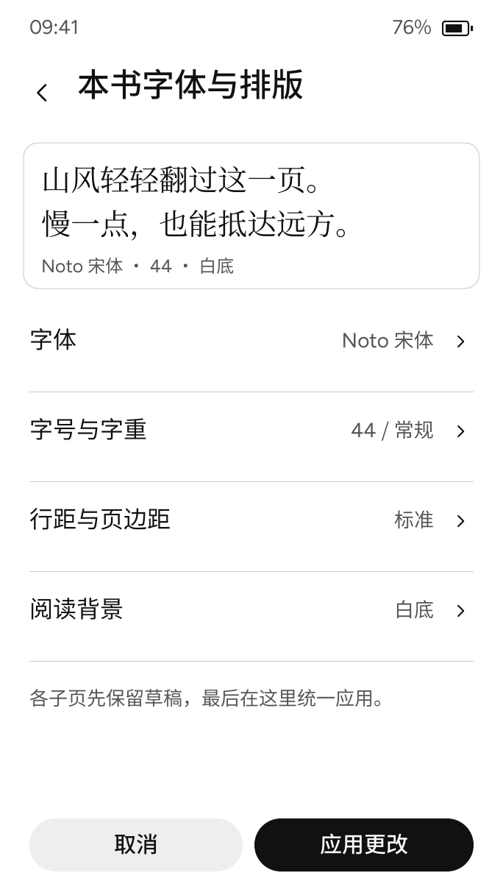
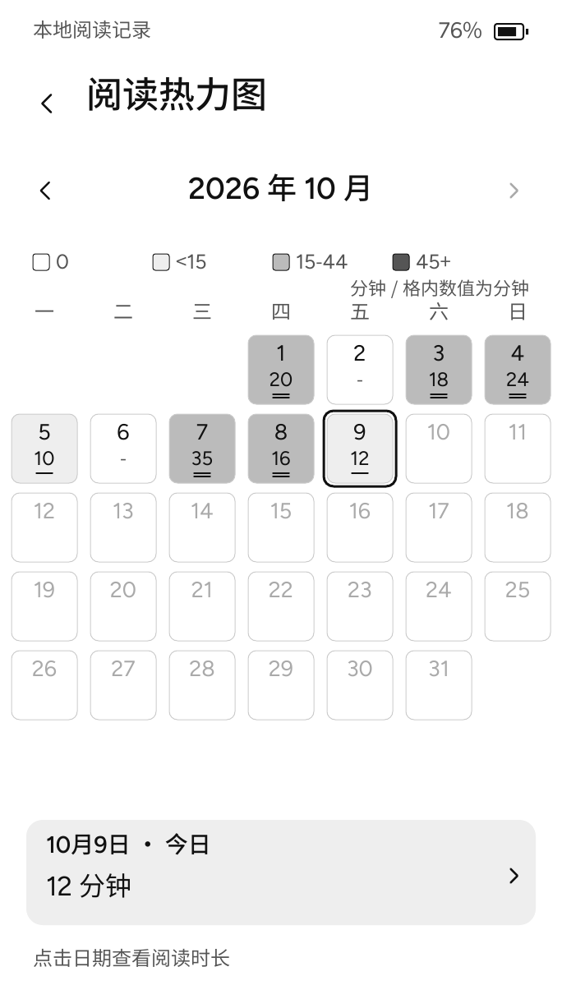
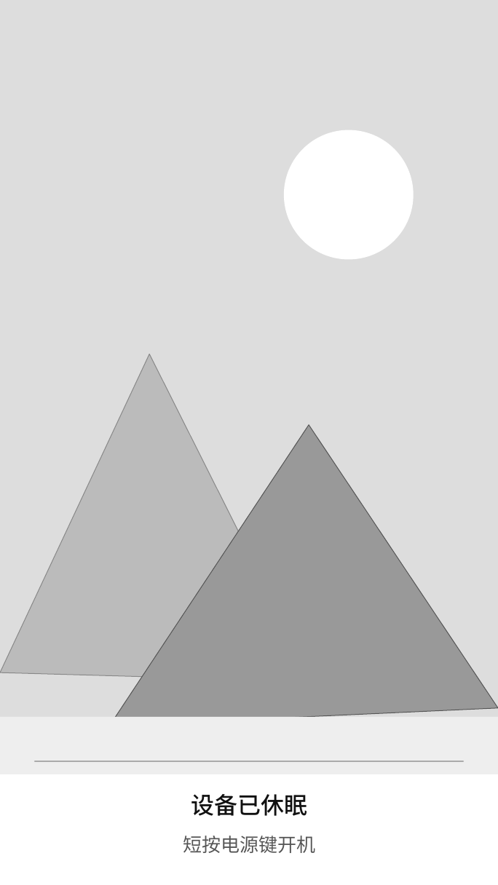

清晰，也从容
围绕字体、分页与翻页响应持续打磨。性能和残影以真机测量为准。
窗边的光落在纸上。没有提醒，没有跳动的数字，只有文字，带着你走向另一个地方。
把时间留给一本书。让一个念头慢慢展开，让这一页，成为今天安静的一部分。
界面示意 · 4.7 英寸 · 684 × 1216
围绕字体、分页与翻页响应持续打磨。性能和残影以真机测量为准。
阅读时长、按书统计与月历，在设备本地保存。每次多读一点。
锁屏壁纸与分级休眠，让设备在阅读之外安静待命。
A LOOK INSIDE
以下是已冻结设计稿的代表画板，均可点击查看 684 × 1216 原图。它们不是设备照片或真机截图；画面中的图书、日期、电量与时长均为示例。

当前已有续读、书架和统计入口；图中原书封面、全局书签与导入排序仍属设计目标。
查看原图 ↗
阅读基础复用官方 TXT / EPUB 与分页能力。字体呈现、翻页响应和残影还需真机验收。
查看原图 ↗
展示排版草稿与明确应用的目标布局。本批尚未完整实现画板中的所有字体和排版选项。
查看原图 ↗
当前已有本地月历、选日明细与按书统计。未校时会显示日期未知，图中数值不是实测记录。
查看原图 ↗
当前已有 FAST / ECO 与壁纸入口。导入、保存和唤醒能力需要独立验证，不能仅凭预览图认定完成。
查看原图 ↗已实现的产品页面包括首页、阅读统计、月历热力图、基础设置、休眠设置和内置存储恢复入口。完整书签、原书封面提取、可靠导入排序以及部分字体、传书和诊断子页尚未完成设计级替换。全局深色模式本版暂缓，自动休眠策略尚未完整接线。这里只展示设计方向，不代表 354 张画板均已实现或通过真机验收。
INSTALL & UPDATE
从项目发布页取得完整发布包，在这里校验文件。所有连接和写入都由你明确发起。
前往 GitHub Releases ↗构建测试通过不代表真机验收完成。网页暂不提供首次分区迁移，也不会自动擦除整片 Flash。
请使用支持 Web Serial 的桌面 Chrome 或 Edge，通过 HTTPS 或本机 localhost 打开。Safari、Firefox 和手机通常无法使用此流程。
连接可能让设备进入下载模式。刷写期间保持 USB 数据线连接；中断后不要反复断电，可重新连接串口并按项目恢复说明操作。
这里只覆盖已有兼容引导与 factory 分区的应用。新设备安装、分区变化和 OTA 双槽设备需要单独核验。不会写入 NVS、书库、分区表或安全熔丝。
同时选择 manifest.json、app.bin、bootloader.bin 和 partition-table.bin。
尚未选择文件，不可刷写。
正在检测浏览器支持…
正在检测刷写驱动…
等待文件与设备检查。